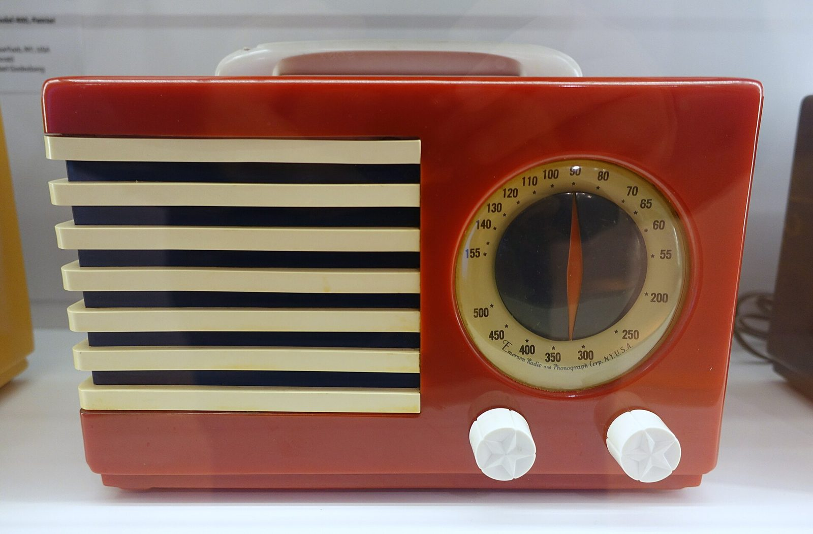

References / Product / 169
Emerson Patriot radio
Norman Bel Geddes’s Catalin table radio for Emerson: a grille of stacked horizontal bars beside a big round dial.
- Source
- Victoria and Albert Museum: Patriot Midget radio, W.31-1992
- Creator
- Norman Bel Geddes (designer); Emerson Radio and Phonograph Corporation (manufacturer)
- Made
- 1940 (V&A: ca. 1940)
- Style
- Streamline Moderne (agent-proposed, not yet reviewed by a person)
- Moods
- Streamlined, bright, patriotic
- Evidence
- Downloaded and inspected Daderot’s 2015 photograph of a Model 400 (FC-400) Patriot in the Museum für Angewandte Kunst Köln on Wikimedia Commons_Patriot,_Norman_Bel_Geddes,_Emerson,_Catalin_case_-_Museum_f%C3%BCr_Angewandte_Kunst_K%C3%B6ln_-_Cologne,_Germany_-_DSC09461.jpg) at 1920 px. Read the V&A record for W.31-1992 (blue case, red and white grille) through the V&A API. The two copies differ in color.
- Reviewed
- Rights
- Open license, stored. License: CC0-1.0. Rights policy
Context
The V&A says Bel Geddes (1893–1958) helped define streamline styling, but chose a rectilinear case for the Patriot, a “Stars and Stripes” design made in red, white, and blue combinations and linked to Emerson’s 25th anniversary; the knobs are embossed with stars. V&A O85202.
The V&A copy has a blue case, a grille of alternating red and white bands, and two blue knobs; it measures 19 × 26.5 × 13.6 cm. V&A O85202.
Observed
- The Cologne copy has a glossy red case with slightly rounded edges and a cream handle on top.
- The left half of the front is a grille of seven cream bars stacked horizontally with dark gaps between them; the bars are flat on the front and slightly rounded at the ends.
- The right half holds a large round dial with a cream ring of numbers and a red pointer; the small text on the dial reads “Emerson Radio and Phonograph Corp. N.Y. U.S.A.”
- Two white knobs, each embossed with a five-pointed star, sit below the dial.
Why it belongs
The radio reduces the style to two signs: parallel horizontal bars and a circle. The bars read as speed lines even on a still box. The V&A’s caution matters: the case itself is not streamlined.
Borrow
Pair a block of stacked horizontal bars with one large circle in a two-part layout.
Use red, cream, and navy as flat plastic colors with no gradient.
Measured
Machine-extracted by tools/image-traits.py on . Full measurement.
- Mean chroma
- 0.18
- Palette
- #b6a987 10%
- #965148 9%
- #a5a6a8 9%
- #7b2114 7%
- #18181e 7%
- #6c1409 5%
- #e7f4fe 4%
- #b6bac2 4%

